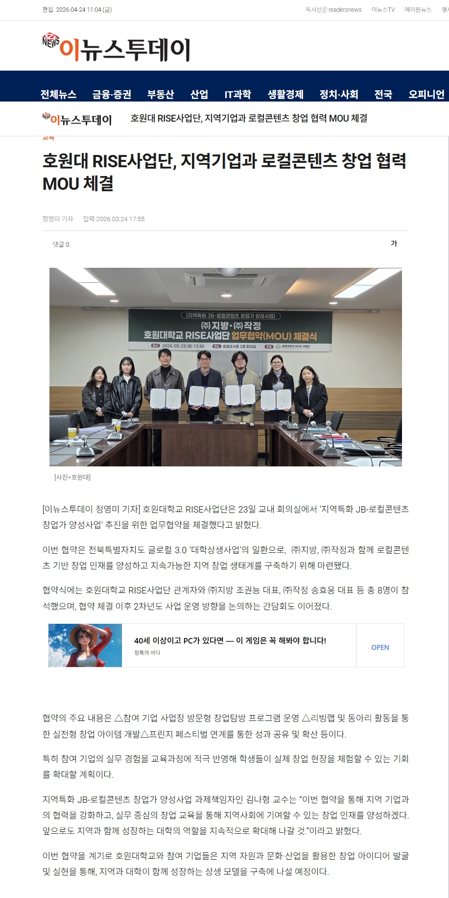

전북특별자치도 '글로컬 3.0 대학상생사업' · 호원대학교 RISE사업단 · 김나형 교수 책임
군산·전북의 문화·식재료·풍경 자원을 창업 아이템으로 재해석해 지속가능한 로컬 브랜드로 성장시킵니다.
비학위과정 → 동아리 → 리빙랩 → 경진대회로 이어지는 단계별 실전 트랙으로 현장에 강한 창업가를 길러냅니다.
지역 기업(㈜지방·㈜작정), 지자체(전북·군산시), 대학(호원대)이 함께 만드는 지역 혁신 생태계.
전북특별자치도
군산시
호원대학교
RISE사업단
㈜지방
㈜작정
재학생 · 지역청년
예비 창업자
2026.03.23 · 호원대 교내 회의실 · 참석 8명

참석자 (총 8명) · 호원대 RISE사업단 관계자, ㈜지방 조관농 대표, ㈜작정 송효용 대표
"이번 협약을 통해 지역 기업과의 협력을 강화하고, 실무 중심의 창업 교육을 통해 지역사회에 기여할 수 있는 창업 인재를 양성하겠다. 앞으로도 지역과 함께 성장하는 대학의 역할을 지속적으로 확대해 나갈 것이다."
— 김나형 교수 (과제책임자)
이번 협약을 계기로 호원대학교와 참여 기업들은 지역 자원과 문화·산업을 활용한 창업 아이디어 발굴 및 실현을 통해,
지역과 대학이 함께 성장하는 상생 모델을 구축해 나갈 예정이다.
2025
2026 · 현재
2027 (예정)
크리에이터·식탁·비건
3학부 일체형 트랙
㈜지방·㈜작정
2차년도 진입